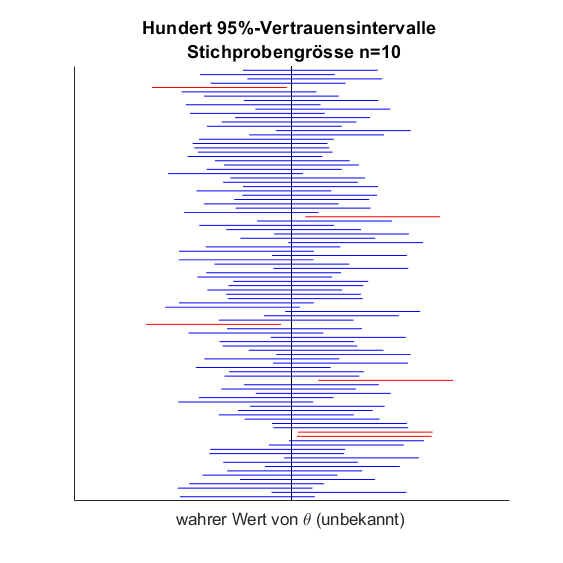
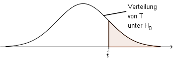

Eine einfache Zufallsstichprobe vom Umfang \( n \) ist eine Folge von stochastisch unabhängigen und identisch verteilten Zufallsvariablen \( X_1, \ldots , X_n \), den sogenannten
Stichprobenvariablen. Dabei bezeichnet \( X_i \) die Merkmalsausprägung des \( i \)-ten Elements in der Stichprobe. Die beobachteten Merkmalswerte \( x_1, \ldots ,x_n \) der \( n \) Elemente sind Realisierungen der Zufallsvariablen \( X_1,
\ldots, X_n \) und heissen Stichprobenwerte.
Allgemein ist eine Stichprobenfunktion eine Funktion, die von den Stichprobenvariablen \( X_1, \ldots, X_n \) abhängt. Eine Schätzfunktion \( \Theta = g(X_1,\ldots, X_n) \) ist eine spezielle Stichprobenfunktion, nämlich eine „Formel“, mit der man den Wert eines Parameters \( \theta \) der Grundgesamtheit schätzen kann: Setzt man eine konkrete Stichprobe \( x_1, \ldots x_n \) ein, so erhält man einen Schätzwert \( \hat \theta = g(x_1, \ldots , x_n) \) für den Parameter \( \theta \).
Eine Schätzfunktion \( \Theta \) eines Parameters \( \theta \) heisst erwartungstreu, wenn gilt:
\[ E(\Theta)=\theta \]Gegeben sind zwei erwartungstreue Schätzfunktionen \( \Theta_1 \) und \( \Theta_2 \) desselben Parameters \( \theta \). Man nennt \( \Theta_1 \) effizienter als \( \Theta_2 \), falls gilt:
\[ V(\Theta_1) < V(\Theta_2) \]Eine Schätzfunktion \( \Theta \) eines Parameters \( \theta \) heisst konsistent, wenn gilt:
\[ E( \Theta) \to \theta \text{ und } V( \Theta) \to 0 \text{ für } n \to \infty \]| Schätzfunktion | Schätzwert | |
|
Erwartungswert Spezialfall: Anteilswert einer Bernoulli-Verteilung |
\( \bar X = \frac{1}{n} \cdot \sum\limits_{i = 1}^n {{X_i}} \) | \( \hat \mu = \bar x = \frac{1}{n} \cdot \sum\limits_{i = 1}^n {{x_i}} \) \( \hat p = \bar x = \frac{1}{n}\sum\limits_{i = 1}^n {{x_i}}=\frac{\text{Anzahl 1en}}{n} \) |
| Varianz | \( {S^2} = \frac{1}{{n - 1}} \cdot \sum\limits_{i = 1}^n {{{({X_i} - \bar X)}^2}} \) | \( {\hat \sigma ^2} = {s^2} = \frac{1}{{n - 1}} \cdot \sum\limits_{i = 1}^n {{{({x_i} - \bar x)}^2}} \) |
| Standardabweichung | \( S = \sqrt {{S^2}} \) | \( {\hat \sigma} = {s} = \sqrt{\frac{1}{{n - 1}} \cdot \sum\limits_{i = 1}^n {{{({x_i} - \bar x)}^2}}} \) |
| Satz (1) \( \bar X \) und \( {S^2} \) sind erwartungstreu und konsistent. (2) \( S \) ist konsistent, aber nicht erwartungstreu. |
Man bestimmt zwei Stichprobenfunktionen \(\Theta_u\) und \(\Theta_o\), die den wahren Wert des Parameters \(\theta\) mit der vorgegebenen Wahrscheinlichkeit \(\gamma\) einschliessen:
\[P(\Theta_u\le\theta\le\Theta_o)=\gamma\]Setzt man nun die Werte \(x_1,x_2,...,x_n\) einer konkreten Stichprobe in \(\Theta_u\) und \(\Theta_o\) ein, so erhält man die Zahlen \(c_u\) und \(c_o\). Das Intervall \([c_u;c_o]\) ist dann ein Vertrauensintervall für den unbekannten Parameter \(\theta\).
Die Wahrscheinlichkeit \(\gamma\) heisst Vertrauensniveau oder statistische Sicherheit (übliche Werte: 95% oder 99%); \(\alpha=1-\gamma\) wird Irrtumswahrscheinlichkeit genannt.
Wenn man hundertmal eine Stichprobe nehmen und zu jeder Stichprobe das Vertrauensintervall berechnen würde, so würden etwa \(100\cdot\gamma\) dieser Intervalle (bei \(\gamma=95\%\) also etwa \(95\)) den wahren Wert des Parameters einschliessen:

tinymce-kalturamedia-embed||10.1 (08:05)||640||390
| (1) Verteilung der Grundgesamtheit | (2) zu schätzender Parameter | (3) Schätzfunktionen | (4) zugehörige standardisierte Zufallsvariable | (5) Verteilung und benötigte Quantile | (6) Zufallsvariablen für Intervallgrenzen |
|
| 1 | Normalverteilung (Varianz \( \sigma^2 \) bekannt) | \(\mu\) | \( \bar X = \frac{1}{n} \cdot \sum\limits_{i = 1}^n {{X_i}} \) | \( U = \frac{{\bar X - \mu }}{{\sigma /\sqrt n }} \) | Standardnormalverteilung (Tabelle 2) \(c=u_p\) mit \( p = \frac{{1 + \gamma }}{2} \) |
\( {\Theta _u} = \bar X - c \cdot \frac{\sigma }{{\sqrt n }} \) \( {\Theta _o} = \bar X +c \cdot \frac{\sigma }{{\sqrt n }} \) |
| 2 | Normalverteilung (Varianz \( \sigma^2 \) unbekannt und \( n\leq 30 \); sonst Fall 1 mit \(s \) als Schätzwert für \(\sigma\) ) | \(\mu\) |
\( \bar X = \frac{1}{n} \cdot \sum\limits_{i = 1}^n {{X_i}} \) \( {S^2} = \frac{1}{{n - 1}} \cdot \sum\limits_{i = 1}^n {{{({X_i} - \bar X)}^2}} \) |
\( T = \frac{{\bar X - \mu }}{{S/\sqrt n }} \) | \(t\)-Verteilung (Tabelle 4) mit \( f = n - 1 \) \( c = {t_{(p;f)}} \) mit \( p = \frac{{1 + \gamma }}{2} \) |
\( {\Theta _u} = \bar X - c \cdot S/\sqrt{n} \) \( {\Theta _o} = \bar X + c \cdot S/\sqrt{n} \) |
| 3 | Normalverteilung | \(\sigma^2\) | \( \bar X = \frac{1}{n} \cdot \sum\limits_{i = 1}^n {{X_i}} \) \( {S^2} = \frac{1}{{n - 1}} \cdot \sum\limits_{i = 1}^n {{{({X_i} - \bar X)}^2}} \) |
\( Z = (n - 1)\frac{{{S^2}}}{{{\sigma ^2}}} \) |
Chi-Quadrat-Verteilung (Tabelle 3) mit \( f = n - 1 \)
\( {c_1} = {z_{({p_1};f)}} \) mit \( {p_1} = \frac{{1 - \gamma }}{2} \) \( {c_2} = {z_{({p_2};f)}} \) mit \( {p_2} = \frac{{1 + \gamma }}{2} \) |
\( {\Theta _u} = \frac{{(n - 1) \cdot {S^2}}}{{{c_2}}} \) \( {\Theta _o} = \frac{{(n - 1) \cdot {S^2}}}{{{c_1}}} \) |
| 4 |
Bernoulli-Verteilung mit \( n\hat p(1 - \hat p) > 9 \) |
\( p\) | \( \bar X = \frac{1}{n} \cdot \sum\limits_{i = 1}^n {{X_i}}\) \( X_i \) 0/1-wertig mit \( P({X_i} = 1) = p \) |
\( U = \frac{{\overline X - p}}{{\sqrt {p(1 - p)/n} }} \) |
Standardnormalverteilung näherungsweise (Tabelle 2) \( c = {u_q} \) mit \( q = \frac{{1 + \gamma }}{2} \) |
\( {\Theta _u} = \bar X - c \cdot \sqrt {\frac{{\bar X \cdot (1 - \bar X)}}{n}} \)
\( {\Theta _o} = \bar X + c \cdot \sqrt {\frac{{\bar X \cdot (1 - \bar X)}}{n}} \) |
| 5 | beliebig mit \(n>30\) | \(\mu\ , \sigma^2\) | wie im Fall 1 (gegebenenfalls mit \(s\) als Schätzwert für \(\sigma\)) bzw. wie im Fall 3 | |||
|
1. Nullhypothese \( H_0 \) aufstellen Um welchen Parameter geht es? Welchen Wert hat er angeblich? Oder werden zwei Parameter verglichen? 2. Alternativhypothese \( H_A \) aufstellen Kommt es darauf an, in welche Richtung die Abweichung geht? Ist dies der Fall, so beschreibt \( H_A \) nur die relevante Alternative. 3. Die richtige Zeile in der Tabelle "Übersicht über die wichtigsten Parametertests" finden Welcher Verteilung folgt die Grundgesamtheit? Um welche Nullhypothese geht es? Welcher Fall liegt vor? 4. Kritische Grenzen bestimmen Dabei müssen wir Folgendes berücksichtigen: - Verteilung der Testvariablen gemäss Tabelle "Übersicht über die wichtigsten Parametertests" (letzte Kolonne) - Signifikanzniveau \( \alpha \) - Ist \( H_A \) einseitig oder zweiseitig? Wenn einseitig, auf welcher Seite befindet sich der kritische Bereich? 5. Testwert berechnen gemäss Tabelle "Übersicht über die wichtigsten Parametertests" (vorletzte Kolonne). 6. Testentscheidung fällen Liegt der Testwert im Annahmebereich oder im kritischen Bereich? |
| Verteilung der Grundgesamtheit | Nullhypothese | Fall | Schätzfunktion | Testvariable (standardisiert) | Verteilung der Testvariablen unter \(H_0\) | |
| 1 | Normalverteilung | \( \mu = {\mu _0} \) | Varianz \( \sigma^2 \) bekannt oder \(n>30\)* |
\( \bar X = \frac{1}{n} \cdot \sum\limits_{i = 1}^n {{X_i}} \) | \( U = \frac{{\bar X - {\mu _0}}}{{\sigma /\sqrt n }} \) | Standardnormal-verteilung (Tabelle 2) |
| 2 | Normalverteilung | \( \mu = {\mu _0} \) | Varianz \( \sigma^2 \) unbekannt | \( \bar X = \frac{1}{n} \cdot \sum\limits_{i = 1}^n {{X_i}} \) | \( T = \frac{{\bar X - {\mu _0}}}{{S/\sqrt n }} \) | \(t\)-Verteilung mit \(f=n-1\) (Tabelle 4) |
| 3 | 2 Normal-verteilungen | \( {\mu _1} - {\mu _2} = 0 \) | Abhängige Stichproben; Varianzen \( \sigma_1^2 \) und \( \sigma_2^2 \) bekannt oder \(n>30\)* | \( \bar Z = \bar X - \bar Y \) | \( U = \frac{{\bar Z}}{{\sigma}} \) mit \( {\sigma ^2} = \frac{{\sigma _1^2 + \sigma _2^2}}{n} \) | Standardnormal-verteilung (Tabelle 2) |
| 4 | 2 Normal-verteilungen | \( {\mu _1} - {\mu _2} = 0 \) | Abhängige Stichproben; Varianzen \( \sigma_1^2 \) und \( \sigma_2^2 \) unbekannt |
\( \bar Z = \bar X - \bar Y \) \( {S^2} = \frac{1}{{n - 1}} \cdot \sum\limits_{i = 1}^n {{{({X_i} - {Y_i} - \bar Z)}^2}} \) |
\( T = \frac{{\bar Z}}{{S/\sqrt n }} \) | \(t\)-Verteilung mit \(f=n-1\) (Tabelle 4) |
| 5 | 2 Normal-verteilungen | \( {\mu _1} - {\mu _2} = 0 \) | Unabhängige Stichproben; Varianzen \( \sigma_1^2 \) und \( \sigma_2^2 \) bekannt oder \(n_1,n_2>30\)* | \( \bar Z = \bar X - \bar Y \) | \( U = \frac{Z}{\sigma } \) mit \( {\sigma ^2} = \frac{{\sigma _1^2}}{{{n_1}}} + \frac{{\sigma _2^2}}{{{n_2}}} \) | Standardnormal-verteilung (Tabelle 2) |
| 6 | 2 Normal-verteilungen | \( {\mu _1} - {\mu _2} = 0 \) | Unabhängige Stichproben; Varianzen \( \sigma_1^2 \) und \( \sigma_2^2 \) unbekannt, aber gleich | \( T = \sqrt {\frac{{{n_1}{n_2}({n_1} + {n_2} - 2)}}{{{n_1} + {n_2}}} \cdot } \frac{{\bar X - \bar Y}}{{\sqrt {({n_1} - 1)S_1^2 + ({n_2} - 1)S_2^2} }} \) | t-Verteilung mit \(f=n_1+n_2-2\) (Tabelle 4) | |
| 7 | Normalverteilung | \( {\sigma ^2} = \sigma _0^2 \) | \( {S^2} = \frac{1}{{n - 1}} \cdot \sum\limits_{i = 1}^n {{{({X_i} - \bar X)}^2}} \) | \( Z = (n - 1)\frac{{{S^2}}}{{\sigma _0^2}} \) | Chi-Quadrat-Vert. mit \(f=n–1\) (Tabelle 3) | |
| 8 | Bernoulli-Verteilung | \( p = {p_0} \) | \( \bar X = \frac{1}{n} \cdot \sum\limits_{i = 1}^n {{X_i}} =\frac{\text{Anzahl 1en}}{n}\) | \( U = \frac{{\bar X - {p_0}}}{{\sqrt {{p_0}(1 - {p_0})/n} }} \) | näherungsweise Standardnormal-verteilung (Tabelle 2) | |
*) Falls gilt: \(n>30\) bzw. \(n_1>30\) und \(n_2>30\), so kann der entsprechende Fall für bekannte Varianzen angewendet werden; dabei dient \(s\) als Schätzwert für \(\sigma\) bzw. \(s_i\) als Schätzwert für \(\sigma_i\).
Bei einem Hypothesentest können zwei Arten von Fehlern auftreten:
| \(\quad\quad\;\; \smallsetminus \quad\)Testentscheidung Realität \(\quad\smallsetminus\) |
\( H_0 \) wird angenommen | \( H_0 \) wird abgelehnt |
| \( H_0 \) ist wahr | Fehler 1. Art | |
| \( H_0 \) ist falsch | Fehler 2. Art |
Der p-Wert ist die Wahrscheinlichkeit, dass die Testvariable \(T\) einen Wert annimmt, der mindestens so extrem ist wie der Testwert \(\hat t\), der aufgrund der Stichprobe berechnet wurde, wenn \(H_0\) wahr ist.
|
 |
| Die eingefärbte Fläche entspricht dem p-Wert bei einer 2-seitigen Alternativhypothese \(H_A:\theta\ne\theta_0\). | Die eingefärbte Fläche entspricht dem p-Wert bei einer 1-seitigen Alternativhypothese \(H_A:\theta>\theta_0\). |